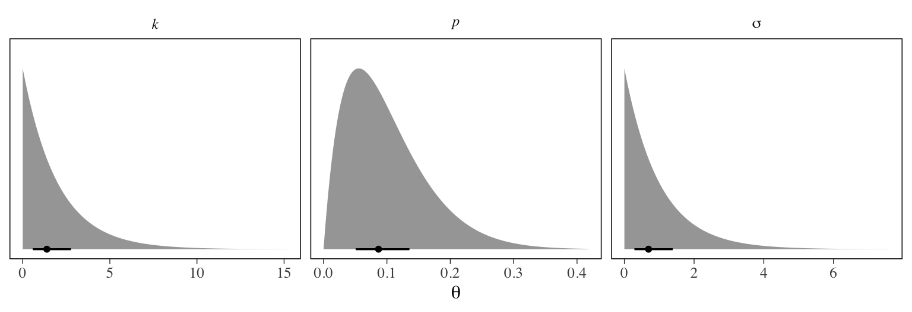
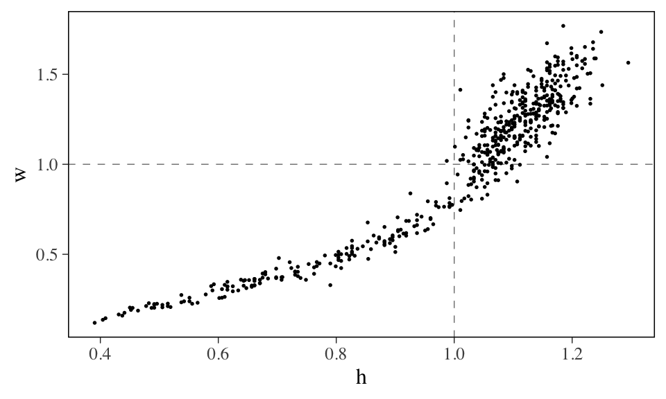
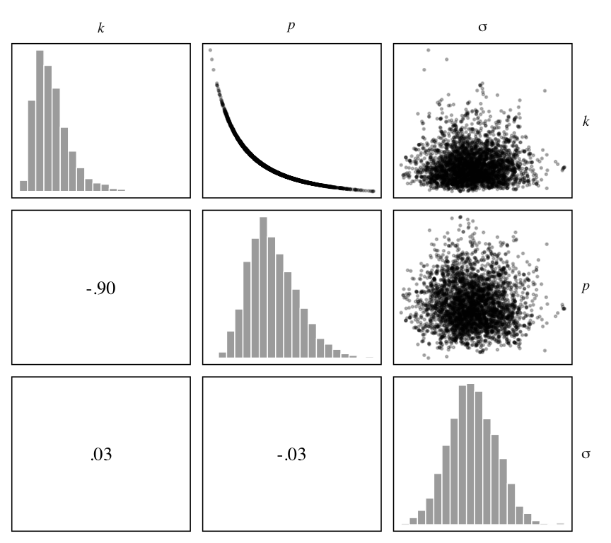
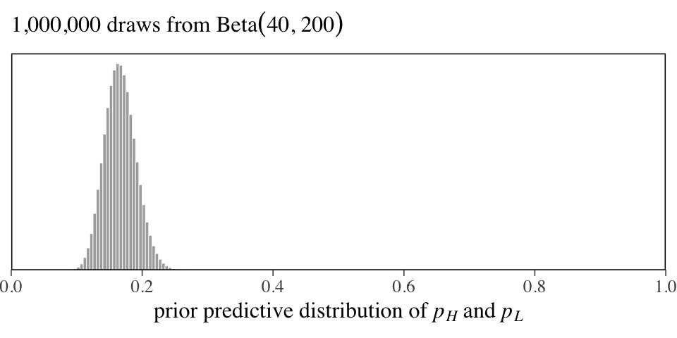
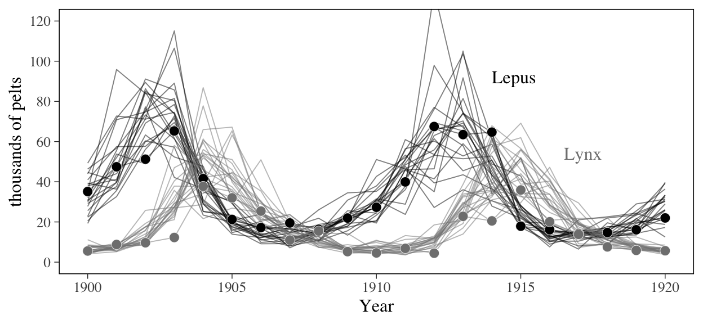
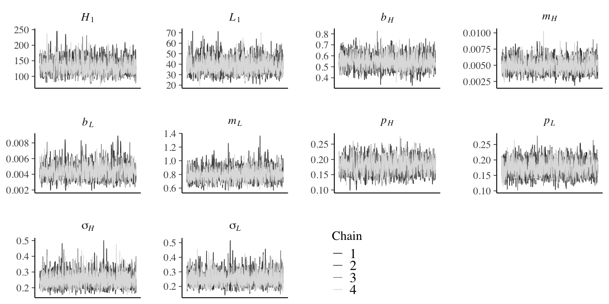
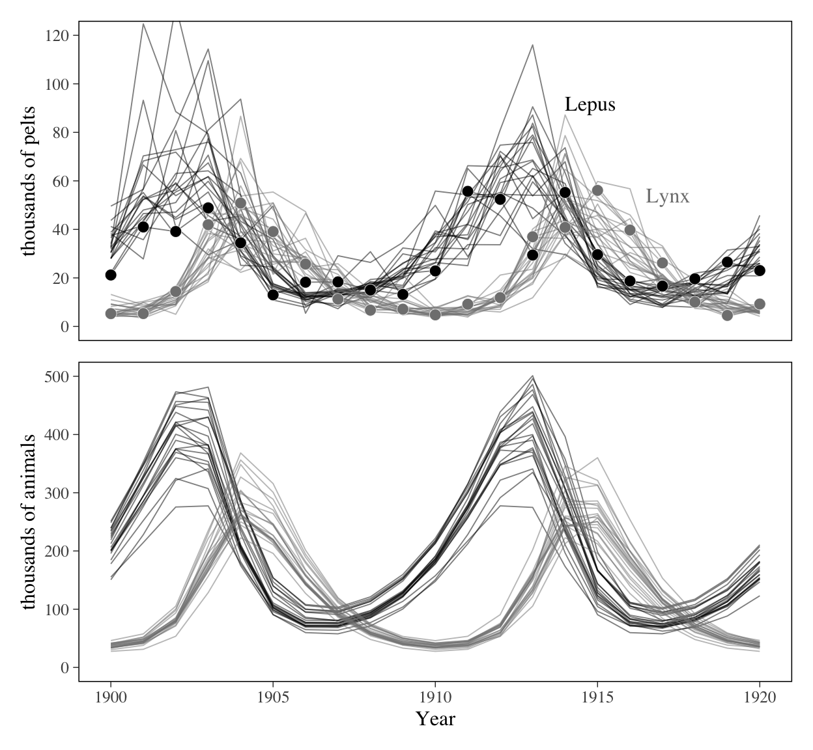
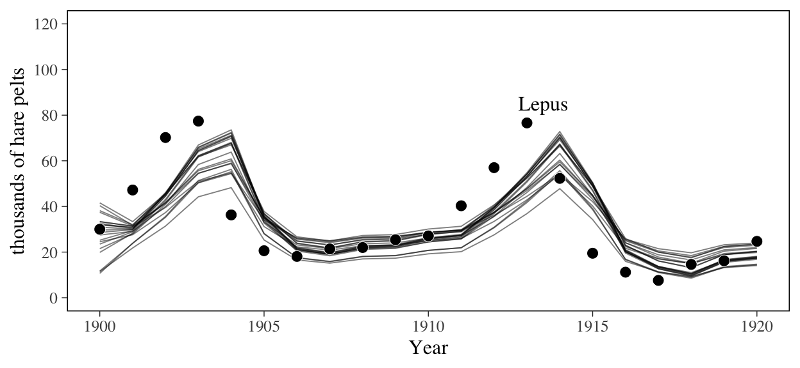
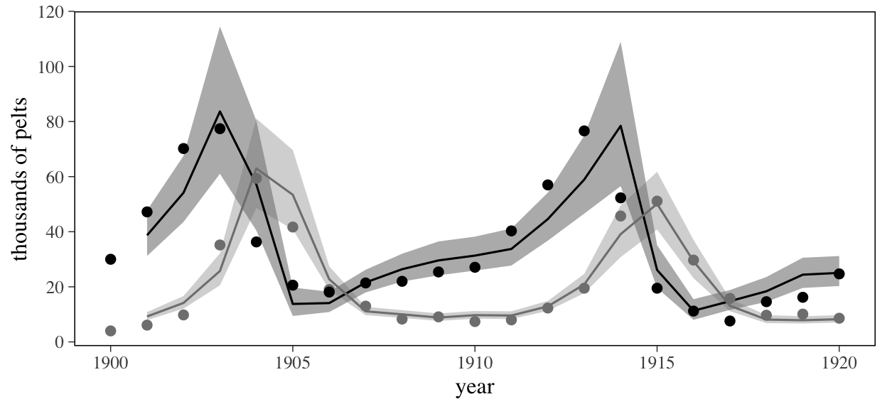

library(tidyverse)
data(Howell1, package = "rethinking")
d <- Howell1
rm(Howell1)
# Scale observed variables
d <- d |>
mutate(w = weight / mean(weight),
h = height / mean(height))16 Generalized Linear Madness
Applied statistics has to apply to all the sciences, and so it is often much vaguer about models. Instead it focuses on average performance, regardless of the model. The generalized linear models in the preceding chapters are not credible scientific models of most natural processes. They are powerful, geocentric (Chapter 4) descriptions of associations. In combination with a logic of causal inference, for example DAGs and do-calculus, generalized linear models can nevertheless be unreasonably powerful.
But there are problems with this GLMs-plus-DAGs approach. Not everything can be modeled as a GLM—a linear combination of variables mapped onto a non-linear outcome. But if it is the only approach you know, then you have to use it….
In this chapter, I will go beyond generalized linear madness. I’ll work through examples in which the scientific context provides a causal model that will breathe life into the statistical model. I’ve chosen examples which are individually distinct and highlight different challenges in developing and translating causal models into bespoke (see the Rethinking
box[section] below) statistical models. You won’t require any specialized scientific expertise to grasp these examples. And the basic strategy is the same as it has been from the start: Define a generative model of a phenomenon and then use that model to design strategies for causal inference and statistical estimation. (McElreath, 2020, p. 525, emphasis in the original)
McElreath then reported he was going to work with Stan code, via rstan::stan(), in this chapter because of the unique demands of some of the models. Our approach will be mixed. We can fit at least a few of the models with brms, particularly with help from the non-linear syntax. However, some of the models to come are either beyond the current scope of brms or are at least beyond my current skill set. In those cases, we’ll follow McElreath’s approach and fit the models with stan().
16.0.0.1 Rethinking: Bespoken for
Mass production has some advantages, but it also makes our clothes fit badly. Garments bought off-the-shelf are not manufactured with you in mind. They are not bespoke products, designed for any particular person with a particular body. Unless you are lucky to have a perfectly average body shape, you will need a tailor to get better.
Statistical analyses are similar. Generalized linear models are off-the-shelf products, mass produced for a consumer market of impatient researchers with diverse goals. Science asked statisticians for tools that could be used anywhere. And so they delivered. But the clothes don’t always fit. (p. 526, emphasis in the original)
16.1 Geometric people
Back in Chapter 4, you met linear regression in the context of building a predictive model of height using weight. You even saw how to measure non-linear associations between the two variables. But nothing in that example was scientifically satisfying. The height-weight model was just a statistical device. It contains no biological information and tells us nothing about how the association between height and weight arises. Consider for example that weight obviously does not cause height, at least not in humans. If anything, the causal relationship is the reverse.
So now let’s try to do better. Why? Because when the model is scientifically inspired, rather than just statistically required, disagreements between model and data are informative of real causal relationships.
Suppose for example that a person is shaped like a cylinder. Of course a person isn’t exactly shaped like a cylinder. There are arms and a head. But let’s see how far this cylinder model gets us. The weight of the cylinder is a consequence of the volume of the cylinder. And the volume of the cylinder is a consequence of growth in the height and width of the cylinder. So if we can relate the height to the volume, then we’d have a model to predict weight from height. (p. 526, emphasis in the original)
16.1.1 The scientific model
If we let \(V\) stand for volume, \(r\) stand for a radius, and \(h\) stand for height, we can solve for volume by
\[V = \pi r^2 h.\]
If we further presume a person’s radius is unknown, but some proportion (\(p\)) of height (\(ph\)), we can rewrite the formula as
\[\begin{align*} V & = \pi (ph)^2 h \\ & = \pi p^2 h^3. \end{align*}\]
Though we’re not interested in volume per se, we might presume weight is some proportion of volume. Thus we could include a final parameter \(k\) to stand for the conversion form weight to volume, leaving us with the formula
\[W = kV = k \pi p^2 h^3,\]
where \(W\) denotes weight.
16.1.2 The statistical model
For one last time, together, let’s load the Howell1 data.
McElreath’s proposed statistical model follows the form
\[\begin{align*} \text{w}_i & \sim \operatorname{Log-Normal}(\mu_i, \sigma) \\ \exp(\mu_i) & = k \pi p^2 \text{h}_i^3 \\ k & \sim \operatorname{Exponential}(0.5) \\ p & \sim \operatorname{Beta}(2, 18) \\ \sigma & \sim \operatorname{Exponential}(1), && \text{where} \\ \text w_i & = \text{weight}_i \big / \overline{\text{weight}}, && \text{and} \\ \text h_i & = \text{height}_i \big / \overline{\text{height}}. \end{align*}\]
The Log-Normal likelihood ensures the predictions for \(\text{weight}_i\) will always be non-negative. Because our parameter \(p\) is the ratio of radius to height, \(p = r / h\), it must be positive. Since people are typically taller than their width, it should also be less than one, and probably substantially less than that. Our next step will be taking a look at our priors.
For the plots in this chapter, we’ll give a nod the minimalistic plots in the authoritative text by Gelman et al. (2013), Bayesian data analysis: Third edition. Just to be a little kick, we’ll set the font to family = "Times". Most of the adjustments will come from ggthemes::theme_base().
library(ggthemes)
theme_set(
theme_base(base_size = 12) +
theme(text = element_text(family = "Times"),
axis.text = element_text(family = "Times"),
axis.ticks = element_line(linewidth = 0.25),
axis.ticks.length = unit(0.1, "cm"),
panel.background = element_rect(fill = "white", linewidth = 0.1),
plot.background = element_blank(),
strip.background = element_blank()
)
)Now we have our theme, let’s get a sense of our priors.
library(tidybayes)
library(brms)
c(prior(beta(2, 18), nlpar = p, coef = italic(p)),
prior(exponential(0.5), nlpar = p, coef = italic(k)),
prior(exponential(1), class = sigma, coef = sigma)) |>
parse_dist(prior) |>
ggplot(aes(y = 0, dist = .dist, args = .args)) +
stat_dist_halfeye(.width = 0.5,
n = 2e3, normalize = "xy",
p_limits = c(0, 0.9995), size = 1) +
scale_y_continuous(NULL, breaks = NULL) +
xlab(expression(theta)) +
facet_wrap(~ coef, scales = "free_x", labeller = label_parsed)
Here the points are the posterior medians and the horizontal lines the quantile-based 50% intervals. Turns out that \(\operatorname{Beta}(2, 18)\) prior for \(p\) pushes the bulk of the prior mass down near zero. The beta distribution also forces the parameter space for \(p\) to range between 0 and 1. If we denote the two parameters of the beta distribution as \(\alpha\) and \(\beta\), we can compute the mean for any beta distribution as \(\alpha / (\alpha + \beta)\). Thus the mean for our \(\operatorname{Beta}(2, 18)\) prior is \(2 / (2 + 18) = 2 / 20 = 0.1\).
Because we computed our weight and height variables, w and h, by dividing the original variables by their respective means, each now has a mean of 1.
d |>
pivot_longer(w:h) |>
group_by(name) |>
summarise(mean = mean(value))# A tibble: 2 × 2
name mean
<chr> <dbl>
1 h 1
2 w 1Here’s their bivariate distribution in a scatter plot.
d |>
ggplot(aes(x = h, y = w)) +
geom_vline(xintercept = 1, color = "grey50", linetype = 2, linewidth = 1/4) +
geom_hline(yintercept = 1, color = "grey50", linetype = 2, linewidth = 1/4) +
geom_point(size = 1/4)
With this scaling, here is the formula for an individual with average weight and height:
\[\begin{align*} 1 & = k \pi p^2 1^3 \\ & = k \pi p^2. \end{align*}\]
If you assume \(p < .5\), \(k\) must be greater than 1. \(k\) also has to be positive. To get a sense of this, we can further work the algebra:
\[\begin{align*} 1 & = k \pi p^2 \\ 1/k & = \pi p^2 \\ k & = 1 / \pi p^2. \end{align*}\]
To get a better sense of that relation, we might plot.
tibble(p = seq(from = 0.001, to = 0.499, by = 0.001)) |>
mutate(k = 1 / (pi * p^2)) |>
ggplot(aes(x = p, y = k)) +
geom_line() +
labs(x = expression(italic(p)),
y = expression(italic(k))) +
coord_cartesian(ylim = c(0, 500))
McElreath’s quick and dirty solution was to set \(k \sim \operatorname{Exponential}(0.5)\), which has a prior predictive mean of 2.
By setting up his model formula as exp(mu) = ..., McElreath effectively used the log link. It turns out that brms only supports the identity and inverse links for family = lognormal. However, we can sneak in the log link by nesting the right-hand side of the formula within log().
b16.1 <- brm(
data = d,
family = lognormal,
bf(w ~ log(3.141593 * k * p^2 * h^3),
k + p ~ 1,
nl = TRUE),
prior = c(prior(beta(2, 18), nlpar = p, lb = 0, ub = 1),
prior(exponential(0.5), nlpar = k, lb = 0),
prior(exponential(1), class = sigma)),
iter = 2000, warmup = 1000, chains = 4, cores = 4,
seed = 16,
file = "fits/b16.01")Check the parameter summary.
print(b16.1) Family: lognormal
Links: mu = identity
Formula: w ~ log(3.141593 * k * p^2 * h^3)
k ~ 1
p ~ 1
Data: d (Number of observations: 544)
Draws: 4 chains, each with iter = 2000; warmup = 1000; thin = 1;
total post-warmup draws = 4000
Regression Coefficients:
Estimate Est.Error l-95% CI u-95% CI Rhat Bulk_ESS Tail_ESS
k_Intercept 5.71 2.78 2.07 13.08 1.00 1015 1069
p_Intercept 0.25 0.06 0.15 0.38 1.00 1015 1106
Further Distributional Parameters:
Estimate Est.Error l-95% CI u-95% CI Rhat Bulk_ESS Tail_ESS
sigma 0.21 0.01 0.19 0.22 1.00 1529 1373
Draws were sampled using sampling(NUTS). For each parameter, Bulk_ESS
and Tail_ESS are effective sample size measures, and Rhat is the potential
scale reduction factor on split chains (at convergence, Rhat = 1).McElreath didn’t show the parameter summary for his m16.1 in the text. If you fit the model with both rethinking and brms, you’ll see our b16.1 matches up quite well. To make our version of Figure 16.2, we’ll use a GGally::ggpairs() workflow. First we’ll save our customizes settings for the three subplot types.
my_lower <- function(data, mapping, ...) {
# Get the x and y data to use the other code
x <- eval_data_col(data, mapping$x)
y <- eval_data_col(data, mapping$y)
# Compute the correlations
corr <- cor(x, y, method = "p", use = "pairwise")
abs_corr <- abs(corr)
# Plot the cor value
ggally_text(
label = formatC(corr, digits = 2, format = "f") |> str_replace("0.", "."),
mapping = aes(),
color = "black",
family = "Times",
size = 3.5) +
scale_x_continuous(NULL, breaks = NULL) +
scale_y_continuous(NULL, breaks = NULL)
}
my_diag <- function(data, mapping, ...) {
ggplot(data = data, mapping = mapping) +
geom_histogram(bins = 20, color = "white", fill = "grey67", linewidth = 1/4) +
scale_x_continuous(NULL, breaks = NULL) +
scale_y_continuous(NULL, breaks = NULL)
}
my_upper <- function(data, mapping, ...) {
ggplot(data = data, mapping = mapping) +
geom_point(alpha = 1/4, size = 1/4) +
scale_x_continuous(NULL, breaks = NULL) +
scale_y_continuous(NULL, breaks = NULL)
}Now we make our version of Figure 16.2.a.
library(GGally)
as_draws_df(b16.1) |>
select(b_k_Intercept:sigma) |>
set_names(c("italic(k)", "italic(p)", "sigma")) |>
ggpairs(upper = list(continuous = my_upper),
diag = list(continuous = my_diag),
lower = list(continuous = my_lower),
labeller = label_parsed) +
theme(strip.text = element_text(size = 8),
strip.text.y = element_text(angle = 0))
We see the lack of identifiability of \(k\) and \(p\) resulted in a strong inverse relation between them. Now here’s how we might make Figure 16.2.b.
nd <- tibble(h = seq(from = 0, to = 1.5, length.out = 50))
p <- predict(b16.1, newdata = nd) |>
data.frame() |>
bind_cols(nd)
d |>
ggplot(aes(x = h)) +
geom_smooth(data = p,
aes(y = Estimate, ymin = Q2.5, ymax = Q97.5),
stat = "identity",
color = "black", fill = "grey67", linewidth = 1/4) +
geom_point(aes(y = w),
size = 1/3) +
coord_cartesian(xlim = c(0, max(d$h)),
ylim = c(0, max(d$w))) +
labs(x = "height (scaled)",
y = "weight (scaled)")
Overall the model did okay, but the poor fit for the cases with lower values of height and weight suggests we might be missing important differences between children and adults.
16.1.3 GLM in disguise
Recall that because brms does not support the log link for the Log-Normal likelihood, we recast our b16.1 likelihood as
\[\begin{align*} \text{w}_i & \sim \operatorname{Log-Normal}(\mu_i, \sigma) \\ \mu_i & = \log(k \pi p^2 \text{h}_i^3). \end{align*}\]
Because multiplication becomes addition on the log scale, we can also express this as
\[\begin{align*} \text{w}_i & \sim \operatorname{Log-Normal}(\mu_i, \sigma) \\ \mu_i & = \log(k) + \log(\pi) + 2 \log(p) + 3 \log(\text{h}_i), \end{align*}\]
which means our fancy non-linear model is just linear regression on the log scale. McElreath pointed this out
to highlight one of the reasons that generalized linear models are so powerful. Lots of natural relationships are GLM relationships, on a specific scale of measurement. At the same time, the GLM approach wants to simply estimate parameters which may be informed by a proper theory, as in this case. (p. 531)


16.3 Ordinary differential nut cracking
Load the Panda_nuts data (Boesch et al., 2019).
data(Panda_nuts, package = "rethinking")
d <- Panda_nuts
rm(Panda_nuts)Anticipating McElreath’s R code 16.11, we’ll wrangle a little.
d <- d |>
mutate(n = nuts_opened,
age_s = age / max(age))
glimpse(d)Rows: 84
Columns: 9
$ chimpanzee <int> 11, 11, 18, 18, 18, 11, 11, 17, 7, 1, 22, 9, 9, 9, 9, 9, 9, 9, 9, 9, 15, 7, 9, 1, 7, 13, 13, 7, 13, 7, 3, 3,…
$ age <int> 3, 3, 4, 4, 4, 4, 4, 5, 5, 5, 5, 6, 6, 6, 6, 6, 6, 6, 6, 6, 6, 6, 6, 6, 6, 6, 6, 6, 6, 6, 7, 7, 7, 7, 7, 7, …
$ sex <fct> m, m, f, f, f, m, m, f, m, m, m, m, m, m, m, m, m, m, m, m, m, m, m, m, m, m, m, m, m, m, f, f, f, m, m, m, …
$ hammer <fct> G, G, wood, G, L, Q, Q, wood, G, L, wood, G, G, G, G, G, G, G, G, G, G, G, G, L, G, wood, G, G, G, wood, G, …
$ nuts_opened <int> 0, 0, 0, 0, 0, 0, 0, 0, 3, 0, 0, 58, 4, 21, 9, 2, 30, 19, 13, 6, 11, 1, 2, 0, 1, 0, 0, 0, 0, 0, 4, 0, 0, 8, …
$ seconds <dbl> 61.0, 37.0, 20.0, 14.0, 13.0, 24.0, 30.5, 135.0, 24.0, 13.0, 34.0, 66.5, 5.0, 24.0, 20.0, 6.0, 42.0, 43.0, 2…
$ help <fct> N, N, N, y, N, N, N, N, N, N, N, N, N, N, N, N, N, N, N, N, N, y, N, N, N, N, N, y, y, N, N, N, N, N, N, N, …
$ n <int> 0, 0, 0, 0, 0, 0, 0, 0, 3, 0, 0, 58, 4, 21, 9, 2, 30, 19, 13, 6, 11, 1, 2, 0, 1, 0, 0, 0, 0, 0, 4, 0, 0, 8, …
$ age_s <dbl> 0.1875, 0.1875, 0.2500, 0.2500, 0.2500, 0.2500, 0.2500, 0.3125, 0.3125, 0.3125, 0.3125, 0.3750, 0.3750, 0.37…Our criterion is n, the number of Panda nuts opened by a chimpanzee on a given occasion. The two focal predictor variables are age and seconds. Here they are depicted in a pairs plot.
d |>
select(n, age, seconds) |>
ggpairs(upper = list(continuous = my_upper),
diag = list(continuous = my_diag),
lower = list(continuous = my_lower)) +
theme(strip.text.y = element_text(angle = 0, hjust = 0))
16.3.1 Scientific model
As a starting point, McElreath proposed we the strength of a chimpanzee would relate to the number of nuts they might open. We don’t have a measure of strength, but we do have age, which is a proxy for how close a chimp might be to their maximum body size, and we presume body size would be proportional to strength. If we let \(t\) index time, \(M_\text{max}\) be the maximum body size (mass), \(M_t\) be the current body size, and \(k\) stand for the rate of skill gain the comes with age, we can write
\[M_t = M_\text{max} [1 - \exp(-kt) ]\]
to solve for mass at a given age (von Bertalanffy, 1934). But again, we actually care about strength, not mass. Letting \(S_t\) be strength at time \(t\), we can express a proportional relation between the two as \(S_t = \beta M_t\). Now if we let \(\lambda\) stand in for the number of nuts opening, \(\alpha\) express the relation of strength to nut opening, we can write
\[\lambda = \alpha S_t^\theta = \alpha \big ( \beta M_\text{max} [1 - \exp(-kt) ] \big ) ^\theta,\]
“where \(\theta\) is some exponent greater than 1” (p. 538). If we rescale \(M_\text{max} = 1\), we can simplify the equation to
\[\lambda = \alpha \beta^\theta [1 - \exp(-kt) ]^\theta.\]
As “the product \(\alpha \beta^\theta\) in the front just rescales strength to nuts-opened-per-second” (p. 538), we can collapse it to a single parameter, \(\phi\), which leaves us with
\[\lambda = \phi [1 - \exp(-kt) ]^\theta.\]
This is our scientific model.
16.3.2 Statistical model
Now if we let \(n_i\) be the number of nuts opened, we can write our statistical model as
\[\begin{align*} n_i & \sim \operatorname{Poisson}(\lambda_i) \\ \lambda_i & = \text{seconds}_i \, \phi [1 - \exp(-k \,\text{age}_i) ]^\theta, \end{align*}\]
where we have replaced our time index, \(t\), with the variable age. By including the variable seconds in the equation, we have scaled the results to be nuts per second. McElreath proposed the priors:
\[\begin{align*} \phi & \sim \operatorname{Log-Normal}(\log 1, 0.10) \\ k & \sim \operatorname{Log-Normal}(\log 2, 0.25) \\ \theta & \sim \operatorname{Log-Normal}(\log 5, 0.25), \end{align*}\]
all of which were Log-Normal to ensure the parameters were positive and continuous. To get a sense of what these priors implied, he simulated. Here’s our version of his simulations, which make up Figure 16.4.
n <- 1e4
# Define the x-axis breaks
at <- 0:6 / 4
# How many prior draws would you like?
n_draws <- 50
# Simulate
set.seed(16)
prior <- tibble(
index = 1:n,
phi = rlnorm(n, meanlog = log(1), sdlog = 0.1),
k = rlnorm(n, meanlog = log(2), sdlog = 0.25),
theta = rlnorm(n, meanlog = log(5), sdlog = 0.25)) |>
slice_sample(n = n_draws) |>
expand_grid(age = seq(from = 0, to = 1.5, length.out = 1e2)) |>
mutate(bm = 1 - exp(-k * age),
ns = phi * (1 - exp(-k * age))^theta)
# Left panel
p1 <- prior |>
ggplot(aes(x = age, y = bm, group = index)) +
geom_line(alpha = 1/2, linewidth = 1/4) +
scale_x_continuous(breaks = at, labels = round(at * max(d$age))) +
ylab("body mass")
# Right panel
p2 <- prior |>
ggplot(aes(x = age, y = ns, group = index)) +
geom_line(alpha = 1/2, linewidth = 1/4) +
scale_x_continuous(breaks = at, labels = round(at * max(d$age))) +
ylab("nuts per second")
# Combine, entitle, and display
library(patchwork)
p1 + p2 +
plot_annotation(title = "Prior predictive simulation for the nut opening model",
subtitle = "Each panel shows the results from 50 prior draws.")
McElreath suggested we inspect the distributions of these priors. Here they are in a series of histograms.
set.seed(16)
tibble(phi = rlnorm(n, meanlog = log(1), sdlog = 0.1),
`italic(k)` = rlnorm(n, meanlog = log(2), sdlog = 0.25),
theta = rlnorm(n, meanlog = log(5), sdlog = 0.25)) |>
pivot_longer(everything()) |>
ggplot(aes(x = value)) +
geom_histogram(bins = 40, boundary = 0, fill = "grey67") +
scale_x_continuous("marginal prior", limits = c(0, NA)) +
scale_y_continuous(NULL, breaks = NULL) +
facet_wrap(~ name, scales = "free", labeller = label_parsed)
Happily, we can fit this model using the non-linear brms syntax.
b16.4 <- brm(
data = d,
family = poisson(link = identity),
bf(n ~ seconds * phi * (1 - exp(-k * age_s))^theta,
phi + k + theta ~ 1,
nl = TRUE),
prior = c(prior(lognormal(log(1), 0.1), nlpar = phi, lb = 0),
prior(lognormal(log(2), 0.25), nlpar = k, lb = 0),
prior(lognormal(log(5), 0.25), nlpar = theta, lb = 0)),
iter = 2000, warmup = 1000, chains = 4, cores = 4,
seed = 16,
file = "fits/b16.04")Check the parameter summary.
print(b16.4) Family: poisson
Links: mu = identity
Formula: n ~ seconds * phi * (1 - exp(-k * age_s))^theta
phi ~ 1
k ~ 1
theta ~ 1
Data: d (Number of observations: 84)
Draws: 4 chains, each with iter = 2000; warmup = 1000; thin = 1;
total post-warmup draws = 4000
Regression Coefficients:
Estimate Est.Error l-95% CI u-95% CI Rhat Bulk_ESS Tail_ESS
phi_Intercept 0.87 0.04 0.79 0.95 1.00 1403 1778
k_Intercept 5.96 0.55 4.86 7.04 1.00 1077 1321
theta_Intercept 9.77 1.99 6.40 14.19 1.00 1143 1392
Draws were sampled using sampling(NUTS). For each parameter, Bulk_ESS
and Tail_ESS are effective sample size measures, and Rhat is the potential
scale reduction factor on split chains (at convergence, Rhat = 1).No we might get a sense of what this posterior means by plotting nuts per second as a function of age in our version of Figure 16.5.
set.seed(16)
as_draws_df(b16.4) |>
slice_sample(n = n_draws) |>
expand_grid(age = seq(from = 0, to = 1.5, length.out = 1e2)) |>
mutate(ns = b_phi_Intercept * (1 - exp(-b_k_Intercept * age))^b_theta_Intercept) |>
ggplot() +
geom_line(aes(x = age, y = ns, group = .draw),
alpha = 1/2, linewidth = 1/4) +
geom_jitter(data = d,
aes(x = age_s, y = n / seconds, size = seconds),
color = "grey50", shape = 1, width = 0.01) +
scale_x_continuous(breaks = at, labels = round(at * max(d$age))) +
scale_size_continuous(breaks = c(1, 50, 100), limits = c(1, NA)) +
labs(y = "nuts per second",
title = "Posterior predictive distribution for the\nnut opening model") +
theme(legend.background = element_blank(),
legend.position = c(0.9, 0.25))
Looks like things flatten out around age == 16. Yet since the data drop off at that age, we probably shouldn’t get overconfident.
16.4 Population dynamics
Load the Lynx_Hare population dynamics data (Hewitt, 1921).
data(Lynx_Hare, package = "rethinking")
glimpse(Lynx_Hare)Rows: 21
Columns: 3
$ Year <int> 1900, 1901, 1902, 1903, 1904, 1905, 1906, 1907, 1908, 1909, 1910, 1911, 1912, 1913, 1914, 1915, 1916, 1917, 1918, 1…
$ Lynx <dbl> 4.0, 6.1, 9.8, 35.2, 59.4, 41.7, 19.0, 13.0, 8.3, 9.1, 7.4, 8.0, 12.3, 19.5, 45.7, 51.1, 29.7, 15.8, 9.7, 10.1, 8.6
$ Hare <dbl> 30.0, 47.2, 70.2, 77.4, 36.3, 20.6, 18.1, 21.4, 22.0, 25.4, 27.1, 40.3, 57.0, 76.6, 52.3, 19.5, 11.2, 7.6, 14.6, 16…As McElreath indicated in his endnote #238 (p. 570), this example is based on Stan case study by the great Bob Carpenter, Predator-prey population dynamics: The Lotka-Volterra model in Stan. You might bookmark that link. It’ll come up later in this section.
Figure 6.6 will give us a sense of how the lynx and hare populations ebbed and flowed.
# For annotation
text <- tibble(
name = c("Hare", "Lynx"),
label = c("Lepus", "Lynx"),
Year = c(1913.5, 1915.5),
value = c(78, 52))
# Wrangle
Lynx_Hare |>
pivot_longer(-Year) |>
# Plot!
ggplot(aes(x = Year, y = value)) +
geom_line(aes(color = name),
linewidth = 1/4) +
geom_point(aes(fill = name),
color = "white", shape = 21, size = 3) +
geom_text(data = text,
aes(label = label, color = name),
family = "Times", hjust = 0) +
scale_y_continuous("thousands of pelts", breaks = 0:4 * 20, limits = c(0, 90)) +
scale_fill_grey(start = 0, end = 0.5) +
scale_color_grey(start = 0, end = 0.5) +
theme(legend.position = "none")
Note, however, that these are numbers of pelts, not of actual animals. This will become important when we start modeling.
A typical way to model evenly-spaced time series data like this would be with an autoregressive model with the basic structure
\[\operatorname{E}(y_t) = \alpha + \beta_1 y_{t-1},\]
where \(t\) indexes time and \(t - 1\) is the time point immediately before \(t\). Models following this form are called first-order autoregressive models, AR(1), meaning that the current time point is only influenced by the previous time point, but none of the earlier ones. You can build on this format by adding other predictors. A natural way would be to use a predictor from \(t - 1\) to predict \(y_t\), following the form
\[\operatorname{E}(y_t) = \alpha + \beta_1 y_{t-1} + \beta_2 x_{t-1}.\]
But that’s still a first-order model. A second-order model, AR(2), would include a term for \(y_{t - 2}\), such as
\[\operatorname{E}(y_t) = \alpha + \beta_1 y_{t-1} + \beta_2 x_{t-1} + \beta_3 y_{t-2}.\]
McElreath isn’t a huge fan of these models, particularly from the scientific modeling perspective he developed in this chapter. But brms can fit them and we’ll practice a little in a bonus section, later on. In the mean time, we’ll follow along and learn about ordinary differential equations (ODEs).
16.4.1 The scientific model
We’ll start off simple and focus first on hares. If we let \(H_t\) be the number of hares at time \(t\), we can express the rate of change in the hare population as
\[\frac{\mathrm{d} H}{\mathrm{d} t} = H_t \times (\text{birth rate}) - H_t \times (\text{death rate}).\]
If we presume both birth rates and death rates (mortality rates) are constants, we might denote them \(b_H\) and \(m_H\), respectively, and re-express the formula as
\[\frac{\mathrm{d} H}{\mathrm{d} t} = H_t b_H - H_t m_H = H_t (b_H - m_H).\]
Building, if we let \(L_t\) stand for the number of lynx present at time \(t\), we can allow the mortality rate depend on that variable with the expanded formula
\[\frac{\mathrm{d} H}{\mathrm{d} t} = H_t (b_H - L_t m_H).\]
We can expand this even further to model how the number of hares at a given time influence the birth rate for lynx (\(b_L\)) to help us model the rate of change in the lynx population as
\[\frac{\mathrm{d} L}{\mathrm{d} t} = L_t (H_t b_L - m_L),\]
where the lynx mortality rate (\(m_l\)) is now constant. This is called the Lotka-Volterra model (Lotka, 1925; Volterra, 1926). You may have noticed how the above equations shifted our focus from what were were originally interested in, \(\operatorname{E}(H_t)\), to a rate of change, \(\mathrm{d} H / \mathrm{d} t\). Happily, our equation for \(\mathrm{d} H / \mathrm{d} t\), “tells us how to update \(H\) after each tiny unit of passing time \(\mathrm d t\)” (p. 544). You update by
\[H_{t +\mathrm d t} = H_t + \mathrm d t \frac{\mathrm d H}{\mathrm d t} = H_t + \mathrm d t H_t (b_H - L_t m_H).\] Here we’ll use a custom function called sim_lynx_hare() to simulate how this can work. Our version of the function is very similar to the one McElreath displayed in his R code 16.14, but we changed it so it returns a tibble which includes a time index, t.
sim_lynx_hare <- function(n_steps, init, theta, dt = 0.002) {
L <- rep(NA, n_steps)
H <- rep(NA, n_steps)
# Set initial values
L[1] <- init[1]
H[1] <- init[2]
for (i in 2:n_steps) {
H[i] <- H[i - 1] + dt * H[i - 1] * (theta[1] - theta[2] * L[i - 1])
L[i] <- L[i - 1] + dt * L[i - 1] * (theta[3] * H[i - 1] - theta[4])
}
# Return a tibble
tibble(t = 1:n_steps,
H = H,
L = L)
}Now we simulate.
# Set the four theta values
theta <- c(0.5, 0.05, 0.025, 0.5)
# Simulate
z <- sim_lynx_hare(n_steps = 1e4,
init = c(filter(Lynx_Hare, Year == 1900) |> pull("Lynx"),
filter(Lynx_Hare, Year == 1900) |> pull("Hare")),
theta = theta)
# What did we do?
glimpse(z)Rows: 10,000
Columns: 3
$ t <int> 1, 2, 3, 4, 5, 6, 7, 8, 9, 10, 11, 12, 13, 14, 15, 16, 17, 18, 19, 20, 21, 22, 23, 24, 25, 26, 27, 28, 29, 30, 31, 32,…
$ H <dbl> 30.00000, 30.01800, 30.03600, 30.05401, 30.07203, 30.09005, 30.10807, 30.12610, 30.14413, 30.16217, 30.18021, 30.19826…
$ L <dbl> 4.000000, 4.002000, 4.004005, 4.006014, 4.008028, 4.010046, 4.012069, 4.014097, 4.016129, 4.018166, 4.020208, 4.022254…Each row is a stand-in index for time. Here we’ll explicitly add a time column and them plot the results in our version of Figure 16.7.
z |>
pivot_longer(-t) |>
ggplot(aes(x = t, y = value, color = name)) +
geom_line(linewidth = 1/4) +
scale_x_continuous(expression(time~(italic(t))), breaks = NULL) +
scale_y_continuous("number (thousands)", breaks = 0:4 * 10, limits = c(0, 45)) +
scale_color_grey(start = 0, end = 0.5) +
theme(legend.position = "none")
“This model produces cycles, similar to what we see in the data. The model behaves this way, because lynx eat hares. Once the hares are eaten, the lynx begin to die off. Then the cycle repeats (p. 545).”
16.4.2 The statistical model
If we continue to let \(H_t\) and \(L_t\) be the number of hares and lynx at time \(t\), we might also want to rehearse the distinction between those numbers and our observations by letting \(h_t\) and \(l_t\) stand for the observed numbers of hares and lynx. These observed numbers, recall, are from counts of pelts. We want a statistical model that can connect \(h_t\) to \(H_t\) and connect \(l_t\) to \(L_t\). Part of that model would include the probability a hare was trapped on a given year, \(p_h\), and a similar probability for a lynx getting trapped, \(p_l\). To make things worse, further imagine the number of pelts for each, in a given year, was rounded to the nearest \(100\) and divided by \(1{,}000\). Those are our values.
We practice simulating all this in Figure 16.8. Here we propose a population of \(H_t = 10^4\) hares and an average trapping rate of about \(10\%\), as expressed by \(p_t \sim \operatorname{Beta}(2, 18)\). As described above, we then divide the number of observed pelts by \(1{,}000\) and round the results, yielding \(h_t\).
n <- 1e4
Ht <- 1e4
set.seed(16)
# Simulate
tibble(pt = rbeta(n, shape1 = 2, shape2 = 18)) |>
mutate(ht = rbinom(n, size = Ht, prob = pt)) |>
mutate(ht = round(ht / 1000, digits = 2)) |>
# Plot
ggplot(aes(x = ht)) +
geom_histogram(binwidth = 0.1, color = "white",
fill = "grey67", linewidth = 1/4) +
scale_y_continuous(NULL, breaks = NULL) +
xlab(expression(thousand~of~pelts~(italic(h[t]))))
On page 546, McElreath encouraged us to try the simulation with different values of \(H_t\) and \(p_t\). Here we’ll do so with a \(3 \times 3\) grid of \(H_t = \{5{,}000, 10{,}000, 15{,}000\}\) and \(p_t \sim \{ \operatorname{Beta}(2, 18), \operatorname{Beta}(10, 10), \operatorname{Beta}(18, 2) \}\).
tibble(shape1 = c(2, 10, 18),
shape2 = c(18, 10, 2)) |>
expand_grid(Ht = c(5e3, 1e4, 15e3)) |>
# Simulate
mutate(pt = map2(.x = shape1, .y = shape2, .f = \(x, y) rbeta(n, shape1 = x, shape2 = y))) |>
mutate(ht = map2(.x = Ht, .y = pt, .f = \(x, y) rbinom(n, size = x, prob = y)))# A tibble: 9 × 5
shape1 shape2 Ht pt ht
<dbl> <dbl> <dbl> <list> <list>
1 2 18 5000 <dbl [10,000]> <int [10,000]>
2 2 18 10000 <dbl [10,000]> <int [10,000]>
3 2 18 15000 <dbl [10,000]> <int [10,000]>
4 10 10 5000 <dbl [10,000]> <int [10,000]>
5 10 10 10000 <dbl [10,000]> <int [10,000]>
6 10 10 15000 <dbl [10,000]> <int [10,000]>
7 18 2 5000 <dbl [10,000]> <int [10,000]>
8 18 2 10000 <dbl [10,000]> <int [10,000]>
9 18 2 15000 <dbl [10,000]> <int [10,000]>set.seed(16)
# Define the 3 X 3 grid
tibble(shape1 = c(2, 10, 18),
shape2 = c(18, 10, 2)) |>
expand_grid(Ht = c(5e3, 1e4, 15e3)) |>
# Simulate
mutate(pt = map2(.x = shape1, .y = shape2, .f = \(x, y) rbeta(n, shape1 = x, shape2 = y))) |>
mutate(ht = map2(.x = Ht, .y = pt, .f = \(x, y) rbinom(n, size = x, prob = y))) |>
unnest(c(pt, ht)) |>
# Wrangle
mutate(ht = round(ht / 1000, digits = 2),
beta = str_c("italic(p[t])%~%'Beta '(", shape1, ", ", shape2, ")"),
Htlab = str_c("italic(H[t])==", Ht)) |>
mutate(beta = factor(beta,
levels = c("italic(p[t])%~%'Beta '(2, 18)", "italic(p[t])%~%'Beta '(10, 10)", "italic(p[t])%~%'Beta '(18, 2)")),
Htlab = factor(Htlab,
levels = c("italic(H[t])==15000", "italic(H[t])==10000", "italic(H[t])==5000"))) |>
# Plot!
ggplot(aes(x = ht)) +
geom_histogram(aes(fill = beta == "italic(p[t])%~%'Beta '(2, 18)" & Htlab == "italic(H[t])==10000"),
binwidth = 0.25, boundary = 0, linewidth = 1/10) +
geom_vline(aes(xintercept = Ht / 1000),
linetype = 2, linewidth = 1/4) +
scale_y_continuous(NULL, breaks = NULL) +
scale_fill_grey(start = 0.67, end = 0, breaks = NULL) +
xlab(expression(thousand~of~pelts~(italic(h[t])))) +
facet_grid(Htlab ~ beta, labeller = label_parsed, scales = "free_y")
The vertical dashed lines mark off the maximum values in each panel. The histogram in black is of the simulation parameters based on our version of Figure 16.8, above.
McElreath’s proposed model is
\[\begin{align*} h_t & \sim \operatorname{Log-Normal} \big (\log(p_H H_t), \sigma_H \big) \\ l_t & \sim \operatorname{Log-Normal} \big (\log(p_L L_t), \sigma_L \big) \\ H_1 & \sim \operatorname{Log-Normal}(\log 10, 1) \\ L_1 & \sim \operatorname{Log-Normal}(\log 10, 1) \\ H_{T >1} & = H_1 + \int_1^T H_t (b_H - m_H L_t) \mathrm{d} t \\ L_{T >1} & = L_1 + \int_1^T L_t (b_L H_T - m_L) \mathrm{d} t \\ \sigma_H & \sim \operatorname{Exponential}(1) \\ \sigma_L & \sim \operatorname{Exponential}(1) \\ p_H & \sim \operatorname{Beta}(\alpha_H, \beta_H) \\ p_L & \sim \operatorname{Beta}(\alpha_L, \beta_L) \\ b_H & \sim \operatorname{Half-Normal}(1, 0.5) \\ b_L & \sim \operatorname{Half-Normal}(0.5, 0.5) \\ m_H & \sim \operatorname{Half-Normal}(0.5, 0.5) \\ m_L & \sim \operatorname{Half-Normal}(1, 0.5). \end{align*}\]
It’s not immediately clear from the text, but if you look closely at the output from cat(Lynx_Hare_model) (see below), you’ll see \(\alpha_H = \alpha_L = 40\) and \(\beta_H = \beta_L = 200\). If you’re curious, here’s a plot of what the \(\operatorname{Beta}(40, 200)\) prior looks like.
set.seed(16)
tibble(p = rbeta(n = 1e6, shape1 = 40, shape2 = 200)) |>
ggplot(aes(x = p)) +
geom_histogram(binwidth = 0.005, boundary = 0, color = "white",
fill = "grey67", linewidth = 1/6) +
scale_x_continuous(expression(prior~predictive~distribution~of~italic(p[H])~and~italic(p[L])),
breaks = 0:5 / 5, expand = c(0, 0), limits = c(0, 1)) +
scale_y_continuous(NULL, breaks = NULL, expand = expansion(mult = c(0, 0.05))) +
labs(subtitle = expression("1,000,000 draws from Beta"*(40*", "*200)))
The \(\operatorname{Beta}(40, 200)\) prior suggests an average trapping rate near 16%.
⚠️ The content to follow is going to diverge from the text, a bit. As you can see from the equation, above, McElreath’s statistical model is a beast. We can fit this model with brms, but the workflow is more complicated than usual. To make this material more approachable, I am going to divide the remainder of this section into two subsections. In the first subsection, we’ll fit a simplified version of McElreath’s m16.5, which does not contain the measurement-error portion. In the second subsection, we’ll tack on the measurement-error portion and fit the full model. ⚠️
16.4.2.1 The simple Lotka-Volterra model
Before we get into it, I should acknowledge that this brms approach to fitting ODE’s is a direct result of the generous contributions from Markus Gesmann. It was one of his older blog posts, PK/PD reserving models, that led me to believe one could fit an ODE model with brms. When I reached out to Gesmann on GitHub (see Issue #18), he went so far as to write a new blog post on exactly this model: Fitting multivariate ODE models with brms. The workflow to follow is something of a blend of the methods in his blog post, McElreath’s model in the text, and the original post by Carpenter that started this all.
As far as the statistical model goes, we might express the revision of McElreath’s model omitting the measurement-error portion as
\[\begin{align*} h_t & \sim \operatorname{Log-Normal} \big (\log(H_t), \sigma_H \big) \\ l_t & \sim \operatorname{Log-Normal} \big (\log(L_t), \sigma_L \big) \\ H_1 & \sim \operatorname{Log-Normal}(\log 10, 1) \\ L_1 & \sim \operatorname{Log-Normal}(\log 10, 1) \\ H_{T >1} & = H_1 + \int_1^T H_t (b_H - m_H L_t) \mathrm{d} t \\ L_{T >1} & = L_1 + \int_1^T L_t (b_L H_T - m_L) \mathrm{d} t \\ b_H & \sim \operatorname{Half-Normal}(1, 0.5) \\ b_L & \sim \operatorname{Half-Normal}(0.5, 0.5) \\ m_H & \sim \operatorname{Half-Normal}(0.5, 0.5) \\ m_L & \sim \operatorname{Half-Normal}(1, 0.5) \\ \sigma_H & \sim \operatorname{Exponential}(1) \\ \sigma_L & \sim \operatorname{Exponential}(1). \end{align*}\]
With the exception of the priors for the \(\sigma\) parameters, this is basically the same model Carpenter fit with his original Stan code. Carpenter expressed his model using a different style of notation, but the parts are all there.
As for our brms, the first issue we need to address is that, at the time of this writing, brms is only set up to fit a univariate ODE model. As Gesmann pointed out, the way around this is to convert the Lynx_Hare data into the long format where the pelt values from the Lynx and Hare columns are all listed in a pelts columns and the two animal populations are differentiated in a population column. We’ll call this long version of the data Lynx_Hare_long.
Lynx_Hare_long <- Lynx_Hare |>
pivot_longer(-Year,
names_to = "population",
values_to = "pelts") |>
mutate(delta = if_else(population == "Lynx", 1, 0),
t = Year - min(Year) + 1) |>
arrange(delta, Year)
# What did we do?
head(Lynx_Hare_long)# A tibble: 6 × 5
Year population pelts delta t
<int> <chr> <dbl> <dbl> <dbl>
1 1900 Hare 30 0 1
2 1901 Hare 47.2 0 2
3 1902 Hare 70.2 0 3
4 1903 Hare 77.4 0 4
5 1904 Hare 36.3 0 5
6 1905 Hare 20.6 0 6You’ll note how we converted the information in the population column into a dummy variable, delta, which is coded 0 = hares, 1 = lynxes. It’s that dummy variable that will allow us to adjust our model formula so we express a bivariate model as if it were univariate. You’ll see. Also notice how we added a t index for time. This is because the Stan code to follow will expect us to index time in that way.
The next step is to write a script that will tell brms how to tell Stan how to fit a Lotka-Volterra model. In his blog, Gesmann called this LotkaVolterra. Our script to follow is a very minor adjustment of his.2
2 You might also note this script is an update from earlier versions of the ebook. Stan has updated some of its recommended syntax, and it has also discarded the old integrate_ode_rk45() function for ode_rk45().
LotkaVolterra <- "
// Sepcify dynamical system (ODEs)
vector ode_LV(
real t, // Time
vector y, // The system rate
vector theta) { // The parameters (i.e., the birth and mortality rates)
// The outcome
vector[2] dydt;
// Differential equations
dydt[1] = (theta[1] - theta[2] * y[2]) * y[1]; // Hare process
dydt[2] = (theta[3] * y[1] - theta[4]) * y[2]; // Lynx process
return dydt;
}
// Integrate ODEs and prepare output
real LV(
real t,
real Hare0, real Lynx0,
real brHare, real mrHare,
real brLynx, real mrLynx,
real delta) {
vector[2] y0; // Initial values
vector[4] theta; // Parameters
array[1] vector[2] y; // ODE solution
// Set initial values
y0[1] = Hare0; y0[2] = Lynx0;
// Set parameters
theta[1] = brHare; theta[2] = mrHare;
theta[3] = brLynx; theta[4] = mrLynx;
// Solve ODEs
y = ode_rk45(ode_LV, y0, 0, rep_array(t, 1), theta);
// Return relevant population values
return (y[1, 1] * (1 - delta) + y[1, 2] * delta);
}
"If you study this, you’ll see echos of Carpenter’s original Stan code and connections to McElreath’s Stan code (execute cat(Lynx_Hare_model) from his R code 16.17 block), too. But take special notice of the last two lines, above. Those lines use the delta dummy to differentiate the model results for the hare and lynx populations, respectively.
Next we define our formula input. To keep from overwhelming the brm() code, we’ll save it, here, as an independent object called lv_formula.
lv_formula <- bf(
pelts ~ log(eta),
# Use our LV() function from above
nlf(eta ~ LV(t, H1, L1, bh, mh, bl, ml, delta)),
# Initial population state
H1 ~ 1, L1 ~ 1,
# Hare parameters
bh ~ 1, mh ~ 1,
# Lynx parameters
bl ~ 1, ml ~ 1,
# Population-based measurement errors
sigma ~ 0 + population,
nl = TRUE)Note our use of the LV() function in the nlf() line. That’s a function defined in the LotkaVolterra script, above, which will allow us to connect the variables and parameters in our formula code to the underlying statistical model. Next we define our priors and save them as an independent object called lv_priors.
lv_priors <- c(
prior(lognormal(log(10), 1), nlpar = H1, lb = 0),
prior(lognormal(log(10), 1), nlpar = L1, lb = 0),
prior(normal(1, 0.5), nlpar = bh, lb = 0),
prior(normal(0.05, 0.05), nlpar = bl, lb = 0),
prior(normal(0.05, 0.05), nlpar = mh, lb = 0),
prior(normal(1, 0.5), nlpar = ml, lb = 0),
prior(exponential(1), dpar = sigma, lb = 0)
)Now whether you can fit this model in brms may depend on which version you’re using. For details, see the footnote.3 In short, just update to the current version. Within our brm() code, notice our stanvars settings. Also, I find these models benefit from setting init = 0. Happily, this model fit in just about four minutes on my 2019 MacBook Pro.
3 We first fit this model with brms version 2.14.4. At that time, the only way to get it to run successfully was by using backend = "cmdstan". I’m not really interested in tackling what that setting means, but rest assured that exciting things are happening for brms and Stan. If you’d like to learn more, check out the (2022) vignette by Webber and Bürkner, Running brms models with within-chain parallelization. But anyways, the current version of brms (2.23.0) no longer requires that backend setting and the complications it entails. The default works fine.
b16.5a <- brm(
data = Lynx_Hare_long,
family = brmsfamily("lognormal", link_sigma = "identity"),
formula = lv_formula,
prior = lv_priors,
iter = 2000, warmup = 1000, chains = 4, cores = 4,
init = 0,
stanvars = stanvar(scode = LotkaVolterra, block = "functions"),
file = "fits/b16.05a")On page 548, McElreath recommend we check the chains. Here we’ll pretty them up with help from bayesplot.
library(bayesplot)
color_scheme_set("gray")
col_names <- c("italic(H)[1]", "italic(L)[1]",
str_c("italic(", c("b[H]", "m[H]", "b[L]", "m[L]"), ")"),
"sigma[italic(H)]", "sigma[italic(L)]", "Chain")
as_draws_df(b16.5a) |>
select(b_H1_Intercept:b_sigma_populationLynx, .chain) |>
set_names(col_names) |>
mcmc_trace(facet_args = list(labeller = label_parsed),
linewidth = 0.15) +
scale_x_continuous(breaks = NULL) +
theme(legend.key.size = unit(0.15, 'in'),
legend.position = c(0.97, 0.13))
They look like a dream. Now inspect the parameter summary.
print(b16.5a) Family: lognormal
Links: mu = identity; sigma = identity
Formula: pelts ~ log(eta)
eta ~ LV(t, H1, L1, bh, mh, bl, ml, delta)
H1 ~ 1
L1 ~ 1
bh ~ 1
mh ~ 1
bl ~ 1
ml ~ 1
sigma ~ 0 + population
Data: Lynx_Hare_long (Number of observations: 42)
Draws: 4 chains, each with iter = 2000; warmup = 1000; thin = 1;
total post-warmup draws = 4000
Regression Coefficients:
Estimate Est.Error l-95% CI u-95% CI Rhat Bulk_ESS Tail_ESS
H1_Intercept 23.42 2.09 19.55 27.88 1.00 2495 2454
L1_Intercept 6.69 0.70 5.39 8.16 1.00 2007 2211
bh_Intercept 0.55 0.06 0.43 0.68 1.00 1150 1623
mh_Intercept 0.03 0.00 0.02 0.04 1.00 1306 2068
bl_Intercept 0.02 0.00 0.02 0.03 1.00 1324 1654
ml_Intercept 0.80 0.09 0.63 0.99 1.00 1191 1557
sigma_populationHare 0.25 0.04 0.18 0.35 1.00 2672 2105
sigma_populationLynx 0.25 0.04 0.18 0.35 1.00 2748 2691
Draws were sampled using sampling(NUTS). For each parameter, Bulk_ESS
and Tail_ESS are effective sample size measures, and Rhat is the potential
scale reduction factor on split chains (at convergence, Rhat = 1).As Gesmann covered in his blog, we need to use the brms::expose_functions() function to expose Stan functions to R before we use some of our favorite post-processing functions.
expose_functions(b16.5a, vectorize = TRUE)Now we’re ready to plot our results like McElreath did in Figure 16.9a. Our first step will be to use predict().
p <- predict(
b16.5a,
summary = F,
# How many posterior predictive draws would you like?
ndraws = 21)
str(p) num [1:21, 1:42] 35.1 41 30.9 22.8 20.5 ...
- attr(*, "dimnames")=List of 2
..$ : NULL
..$ : NULLWe’re ready to plot!
# Ror annotation
text <- tibble(
population = c("Hare", "Lynx"),
label = c("Lepus", "Lynx"),
Year = c(1914, 1916.5),
value = c(92, 54))
# Wrangle
p <- p |>
data.frame() |>
set_names(1:42) |>
mutate(iter = 1:n()) |>
pivot_longer(-iter, names_to = "row") |>
mutate(row = as.double(row)) |>
left_join(Lynx_Hare_long |> mutate(row = 1:n()),
by = "row")
# Plot
p |>
ggplot(aes(x = Year, y = value)) +
geom_line(aes(group = interaction(iter, population), color = population),
alpha = 1/2, linewidth = 1/3) +
geom_point(data = p |> filter(iter == 1),
aes(x = Year, fill = population),
color = "white", shape = 21, size = 3, stroke = 1/5) +
geom_text(data = text,
aes(label = label, color = population),
family = "Times", hjust = 0) +
scale_y_continuous("thousands of pelts", breaks = 0:6 * 20) +
scale_color_grey(start = 0, end = 0.5, breaks = NULL) +
scale_fill_grey(start = 0, end = 0.5, breaks = NULL) +
coord_cartesian(ylim = c(0, 120))
Since this version of the model didn’t include a measurement-error process, we don’t have a clear way to make an analogue of Figure 16.9b. We’ll contend with that in the next section.
16.4.2.2 Add a measurement-error process to the Lotka-Volterra model
Now we have a sense of what the current Lotka-Volterra workflow looks like for brms, we’re ready to complicate our model a bit. Happily, we won’t need to update our LotkaVolterra code. That’s good as it is. But we will need to make a couple minor adjustments to our model formula object, which we now call lv_formula_error. Make special note of the first bf() line and the last line before we set nl = TRUE. That’s where all the measurement-error action is at.
lv_formula_error <- bf(
# This is new
pelts ~ log(eta * p),
nlf(eta ~ LV(t, H1, L1, bh, mh, bl, ml, delta)),
H1 ~ 1, L1 ~ 1,
bh ~ 1, mh ~ 1,
bl ~ 1, ml ~ 1,
sigma ~ 0 + population,
# this is new, too
p ~ 0 + population,
nl = TRUE)Update the priors and save them as lv_priors_error.
lv_priors_error <- c(
prior(lognormal(log(10), 1), nlpar = H1, lb = 0),
prior(lognormal(log(10), 1), nlpar = L1, lb = 0),
prior(normal(1, 0.5), nlpar = bh, lb = 0),
prior(normal(0.05, 0.05), nlpar = bl, lb = 0),
prior(normal(0.05, 0.05), nlpar = mh, lb = 0),
prior(normal(1, 0.5), nlpar = ml, lb = 0),
prior(exponential(1), dpar = sigma, lb = 0),
# Here's our new prior setting
prior(beta(40, 200), nlpar = p, lb = 0, ub = 1)
)That wasn’t all that bad, was it? Okay, fit the full brms analogue to McElreath’s m16.5. If you followed along closely, all should go well.
b16.5b <- brm(
data = Lynx_Hare_long,
family = brmsfamily("lognormal", link_sigma = "identity"),
formula = lv_formula_error,
prior = lv_priors_error,
iter = 2000, warmup = 1000, chains = 4, cores = 4,
init = 0,
stanvars = stanvar(scode = LotkaVolterra, block = "functions"),
file = "fits/b16.05b")Once again, check the quality of the chains.
col_names <- c("italic(H)[1]", "italic(L)[1]",
str_c("italic(", c("b[H]", "m[H]", "b[L]", "m[L]"), ")"),
"italic(p[H])", "italic(p[L])", "
sigma[italic(H)]", "sigma[italic(L)]", "Chain")
as_draws_df(b16.5b) |>
select(b_H1_Intercept:b_sigma_populationLynx, .chain) |>
set_names(col_names) |>
mcmc_trace(facet_args = list(labeller = label_parsed),
linewidth = 0.15) +
scale_x_continuous(breaks = NULL) +
theme(legend.key.size = unit(0.15, 'in'),
legend.position = c(0.55, 0.13))
They look great! Now inspect the model parameter summary.
print(b16.5b) Family: lognormal
Links: mu = identity; sigma = identity
Formula: pelts ~ log(eta * p)
eta ~ LV(t, H1, L1, bh, mh, bl, ml, delta)
H1 ~ 1
L1 ~ 1
bh ~ 1
mh ~ 1
bl ~ 1
ml ~ 1
sigma ~ 0 + population
p ~ 0 + population
Data: Lynx_Hare_long (Number of observations: 42)
Draws: 4 chains, each with iter = 2000; warmup = 1000; thin = 1;
total post-warmup draws = 4000
Regression Coefficients:
Estimate Est.Error l-95% CI u-95% CI Rhat Bulk_ESS Tail_ESS
H1_Intercept 132.02 22.39 93.68 182.38 1.00 1860 2078
L1_Intercept 38.50 6.82 27.23 53.53 1.00 1999 2362
bh_Intercept 0.55 0.06 0.43 0.68 1.00 2123 2058
mh_Intercept 0.00 0.00 0.00 0.01 1.00 1941 1924
bl_Intercept 0.00 0.00 0.00 0.01 1.00 1773 2160
ml_Intercept 0.80 0.09 0.64 0.99 1.00 2128 2062
p_populationHare 0.18 0.02 0.13 0.23 1.00 1857 1976
p_populationLynx 0.18 0.02 0.13 0.23 1.00 1771 2088
sigma_populationHare 0.25 0.04 0.18 0.35 1.00 4008 2536
sigma_populationLynx 0.25 0.04 0.18 0.36 1.00 3573 2830
Draws were sampled using sampling(NUTS). For each parameter, Bulk_ESS
and Tail_ESS are effective sample size measures, and Rhat is the potential
scale reduction factor on split chains (at convergence, Rhat = 1).If you fit McElreath’s m16.5, you’ll see our parameter summaries are very similar to his. Okay, we’re now ready to make the real analogue of McElreath’s Figure 16.9. First we’ll make and save the plot for the top panel.
# Get the posterior predictive draws
p <- predict(
b16.5b,
summary = F,
# How many posterior predictive draws would you like?
ndraws = 21) |>
# Wrangle
data.frame() |>
set_names(1:42) |>
mutate(iter = 1:n()) |>
pivot_longer(-iter, names_to = "row") |>
mutate(row = as.double(row)) |>
left_join(Lynx_Hare_long |> mutate(row = 1:n()),
by = "row")
# Plot!
p1 <- p |>
ggplot(aes(x = Year, y = value)) +
geom_line(aes(group = interaction(iter, population), color = population),
alpha = 1/2, linewidth = 1/3) +
geom_point(data = p |> filter(iter == 1),
aes(x = Year, fill = population),
color = "white", shape = 21, size = 3, stroke = 1/5) +
geom_text(data = text,
aes(label = label, color = population),
family = "Times", hjust = 0) +
scale_y_continuous("thousands of pelts", breaks = 0:6 * 20) +
scale_x_continuous(NULL, breaks = NULL) +
scale_color_grey(start = 0, end = 0.5, breaks = NULL) +
scale_fill_grey(start = 0, end = 0.5, breaks = NULL) +
coord_cartesian(ylim = c(0, 120))Our workflow for the second panel will differ a bit from above and a lot from McElreath’s rethinking-based workflow. In essence, we won’t get the same kind of output McElreath got when he executed post <- extract.samples(m16.5). Our post <- as_draws_df(b16.5b) call only get’s us part of the way there. So we’ll have to be tricky and supplement those results with a little fitted() magic.
post <- as_draws_df(b16.5b)
f <- fitted(b16.5b, summary = F)Now we’re ready to make our version of the bottom panel of Figure 16.9. The trick is to divide our fitted() based results by the appropriate posterior draws from our \(p\) parameters. This is a way of hand computing the post$pop values McElreath showed off in his R code 16.20 block.
p2 <- cbind(f[, 1:21] / post$b_p_populationHare,
f[, 22:42] / post$b_p_populationLynx) |>
data.frame() |>
set_names(1:42) |>
mutate(iter = 1:n()) |>
pivot_longer(-iter, names_to = "row") |>
mutate(row = as.double(row)) |>
left_join(Lynx_Hare_long |> mutate(row = 1:n()),
by = "row") |>
filter(iter < 22) |>
# Plot!
ggplot(aes(x = Year, y = value)) +
geom_line(aes(group = interaction(iter, population), color = population),
alpha = 1/2, linewidth = 1/3) +
scale_y_continuous("thousands of animals", breaks = 0:5 * 100) +
scale_color_grey(start = 0, end = 0.5, breaks = NULL) +
scale_fill_grey(start = 0, end = 0.5, breaks = NULL) +
coord_cartesian(ylim = c(0, 500))Now combine the two ggplot2 with patchwork to make the full Figure 16.9 in all its glory.
p1 / p2
Boom!
16.4.3 Lynx lessons Bonus: Practice with the autoregressive model
Back in Section 16.4, we briefly discussed how autoregressive models are a typical way to explore processes like those in lynx-hare data. In this bonus section, we’ll practice fitting a few of these. To start off, we’ll restrict ourselves to focusing on just one of the criteria, Hare. Our basic autoregressive model will follow the form
\[\begin{align*} \text{Hare}_t & \sim \operatorname{Normal}(\mu_t, \sigma) \\ \mu_t & = \alpha + \beta_1 \text{Hare}_{t - 1} \\ \alpha & \sim \; ? \\ \beta_1 & \sim \; ? \\ \sigma & \sim \operatorname{Exponential}(1), \end{align*}\]
were \(\beta_1\) is the first-order autoregressive coefficient and the question marks in the third and fourth lines indicate we’re not wedding ourselves to specific priors, at the moment. Also, note the \(t\) subscripts, which denote which time period the observation is drawn from, which in these data is \(\text{Year} = 1900, 1901, \dots, 1920\). Conceptually, \(t\) is now and \(t - 1\) the time point just before now. So if we were particularly interested in \(\operatorname E (\text{Hare}_{t = 1920})\), \(\text{Hare}_{t - 1}\) would be the same as \(\text{Hare}_{t = 1919}\).
With brms, you can fit a model like this using the ar() function. By default, ar() presumes the criterion variable (Hare, in this case) is ordered chronologically. If you’re unsure or just want to be on the safe side, you can enter your time variable in the time argument. Also, though the ar() function presumes a first-order autoregressive structure by default, it is capable of fitting models with higher-order autoregressive structures. You can manually specify this with the p argument. Here’s how to fit our simple AR(1) model with explicit ar() syntax.
b16.6 <- brm(
data = Lynx_Hare,
family = gaussian,
Hare ~ 1 + ar(time = Year, p = 1),
prior(exponential(0.04669846), class = sigma),
iter = 2000, warmup = 1000, chains = 4, cores = 4,
seed = 16,
file = "fits/b16.06")You may have noticed we just went with the default brms priors for \(\alpha\) and \(\beta_1\). We got the value for the exponential prior for \(\sigma\) by executing the following.
1 / sd(Lynx_Hare$Hare)[1] 0.04669846Here’s the model summary.
print(b16.6) Family: gaussian
Links: mu = identity
Formula: Hare ~ 1 + ar(time = Year, p = 1)
Data: Lynx_Hare (Number of observations: 21)
Draws: 4 chains, each with iter = 2000; warmup = 1000; thin = 1;
total post-warmup draws = 4000
Correlation Structures:
Estimate Est.Error l-95% CI u-95% CI Rhat Bulk_ESS Tail_ESS
ar[1] 0.74 0.17 0.42 1.06 1.00 2300 2426
Regression Coefficients:
Estimate Est.Error l-95% CI u-95% CI Rhat Bulk_ESS Tail_ESS
Intercept 29.96 8.97 11.45 47.92 1.00 2661 2258
Further Distributional Parameters:
Estimate Est.Error l-95% CI u-95% CI Rhat Bulk_ESS Tail_ESS
sigma 16.34 2.68 12.13 22.59 1.00 3153 2578
Draws were sampled using sampling(NUTS). For each parameter, Bulk_ESS
and Tail_ESS are effective sample size measures, and Rhat is the potential
scale reduction factor on split chains (at convergence, Rhat = 1).Our autoregressive \(\beta_1\) parameter is summarized in the ‘Correlation Structures,’ in which it’s called ‘ar[1].’ Another more old-school way to fit a autoregressive model is by manually computing a lagged version of your criterion variable. In R, you can do this with the lag() function.
Lynx_Hare <- Lynx_Hare |>
mutate(Hare_1 = lag(Hare))
head(Lynx_Hare) Year Lynx Hare Hare_1
1 1900 4.0 30.0 NA
2 1901 6.1 47.2 30.0
3 1902 9.8 70.2 47.2
4 1903 35.2 77.4 70.2
5 1904 59.4 36.3 77.4
6 1905 41.7 20.6 36.3Look closely at the relation between the values in the Hare and Hare_1 columns. They are set up such that \(\text{Hare}_{\text{Year} = 1901} = \text{Hare\_1}_{\text{Year} = 1900}\), \(\text{Hare}_{\text{Year} = 1902} = \text{Hare\_1}_{\text{Year} = 1901}\), and so on. Unfortunately, this approach does produce a single missing value in the first time point for the lagged variable, Hare_1. Here’s how you might use such a variable to manually fit an autoregressive model with brms::brm().
b16.7 <- brm(
data = Lynx_Hare,
family = gaussian,
Hare ~ 1 + Hare_1,
prior = c(prior(normal(0, 1), class = b),
prior(exponential(0.04669846), class = sigma)),
iter = 2000, warmup = 1000, chains = 4, cores = 4,
seed = 16,
file = "fits/b16.07")print(b16.7) Family: gaussian
Links: mu = identity
Formula: Hare ~ 1 + Hare_1
Data: Lynx_Hare (Number of observations: 20)
Draws: 4 chains, each with iter = 2000; warmup = 1000; thin = 1;
total post-warmup draws = 4000
Regression Coefficients:
Estimate Est.Error l-95% CI u-95% CI Rhat Bulk_ESS Tail_ESS
Intercept 10.46 7.22 -3.94 24.97 1.00 3344 2637
Hare_1 0.67 0.18 0.31 1.04 1.00 3315 2515
Further Distributional Parameters:
Estimate Est.Error l-95% CI u-95% CI Rhat Bulk_ESS Tail_ESS
sigma 17.05 3.00 12.34 24.05 1.00 2957 2696
Draws were sampled using sampling(NUTS). For each parameter, Bulk_ESS
and Tail_ESS are effective sample size measures, and Rhat is the potential
scale reduction factor on split chains (at convergence, Rhat = 1).Did you notice how the fourth line in the output read ‘Number of observations: 20?’ That’s because we had that one missing value for Hare_1. One quick and dirty hack might be to use the missing data syntax we learned from Chapter 15. Here’s how that might look.
b16.8 <- brm(
data = Lynx_Hare,
family = gaussian,
bf(Hare ~ 1 + mi(Hare_1)) +
bf(Hare_1 | mi() ~ 1) +
set_rescor(FALSE),
prior = c(prior(normal(0, 1), class = b, resp = Hare),
prior(exponential(0.04669846), class = sigma, resp = Hare),
prior(exponential(0.04669846), class = sigma, resp = Hare1)),
iter = 2000, warmup = 1000, chains = 4, cores = 4,
seed = 16,
file = "fits/b16.08")Check the model summary.
print(b16.8) Family: MV(gaussian, gaussian)
Links: mu = identity
mu = identity
Formula: Hare ~ 1 + mi(Hare_1)
Hare_1 | mi() ~ 1
Data: Lynx_Hare (Number of observations: 21)
Draws: 4 chains, each with iter = 2000; warmup = 1000; thin = 1;
total post-warmup draws = 4000
Regression Coefficients:
Estimate Est.Error l-95% CI u-95% CI Rhat Bulk_ESS Tail_ESS
Hare_Intercept 13.84 6.74 0.56 27.28 1.00 2064 2214
Hare1_Intercept 30.42 6.36 15.75 41.30 1.00 2341 1319
Hare_miHare_1 0.61 0.17 0.26 0.95 1.00 1950 2094
Further Distributional Parameters:
Estimate Est.Error l-95% CI u-95% CI Rhat Bulk_ESS Tail_ESS
sigma_Hare 16.87 2.98 12.27 23.56 1.00 3164 2735
sigma_Hare1 23.00 4.25 16.63 33.12 1.00 2361 1706
Draws were sampled using sampling(NUTS). For each parameter, Bulk_ESS
and Tail_ESS are effective sample size measures, and Rhat is the potential
scale reduction factor on split chains (at convergence, Rhat = 1).Now we have a model based on all 21 observations, again. I’m still not in love with this fix, because it presumes that value in Hare_1 was missing at random, with no accounting for the autoregressive structure. This is why, when you can, it’s probably better to use the ar() syntax.
Anyway, here’s how we might use fitted() to get a sense of \(\operatorname{E}(\text{Hare}_t)\) from our first autoregressive model, b16.6.
set.seed(16)
fitted(b16.6,
summary = F,
ndraws = 21) |>
data.frame() |>
set_names(1900:1920) |>
mutate(iter = 1:n()) |>
pivot_longer(-iter) |>
mutate(Year = as.integer(name)) |>
ggplot(aes(x = Year)) +
geom_line(aes(y = value, group = iter),
alpha = 1/2, linewidth = 1/3) +
geom_point(data = Lynx_Hare,
aes(y = Hare),
color = "white", fill = "black",
shape = 21, size = 3, stroke = 1/4) +
annotate(geom = "text",
x = 1913.5, y = 85,
label = "Lepus", family = "Times") +
scale_y_continuous("thousands of hare pelts", breaks = 0:6 * 20, limits = c(0, 120))
The model did a pretty good job capturing the non-linear trends in the data. But notice how the fitted lines appear to be one step off from the data. This is actually expected behavior for a simple AR(1) model. For insights on why, check out this thread on Stack Exchange.
So far we’ve been fitting the autoregressive models with the Gaussian likelihood, which is a typical approach. If you look at McElreath’s practice problem 16H3, you’ll see he proposed a bivariate autoregressive model using the Log-Normal likelihood. His approach used hand-made lagged predictors and ignored the missing value problem by dropping the first case. That model followed the form
\[\begin{align*} L_t & \sim \operatorname{Log-Normal}(\log \mu_{L, t}, \sigma_L) \\ H_t & \sim \operatorname{Log-Normal}(\log \mu_{H, t}, \sigma_H) \\ \mu_{L, t} & = \alpha_L + \beta_{L1} L_{t - 1} + \beta_{L2} H_{t - 1} \\ \mu_{H, t} & = \alpha_H + \beta_{H1} H_{t - 1} + \beta_{H2} L_{t - 1}, \end{align*}\]
where \(\beta_{L1}\) and \(\beta_{H1}\) are the autoregressive parameters and \(\beta_{L2}\) and \(\beta_{H2}\) are what are sometimes called the cross-lag parameters. McElreath left the priors up to us. I propose something like this:
\[\begin{align*} \alpha_L & \sim \operatorname{Normal}(\log 10, 1) \\ \alpha_H & \sim \operatorname{Normal}(\log 10, 1) \\ \beta_{L1}, \dots, \beta_{H2} & \sim \operatorname{Normal}(0, 0.5) \\ \sigma_L & \sim \operatorname{Exponential}(1) \\ \sigma_H & \sim \operatorname{Exponential}(1). \end{align*}\]
Before we fit the model, we’ll need to make a lagged version of Lynx.
Lynx_Hare <- Lynx_Hare |>
mutate(Lynx_1 = lag(Lynx))Because the predictor variables are not centered at zero, we’ll want to use the 0 + Intercept... syntax. Now fit the bivariate autoregressive model.
b16.9 <- brm(
data = Lynx_Hare,
family = lognormal,
bf(Hare ~ 0 + Intercept + Hare_1 + Lynx_1) +
bf(Lynx ~ 0 + Intercept + Lynx_1 + Hare_1) +
set_rescor(FALSE),
prior = c(prior(normal(log(10), 1), class = b, resp = Hare, coef = Intercept),
prior(normal(log(10), 1), class = b, resp = Lynx, coef = Intercept),
prior(normal(0, 0.5), class = b, resp = Hare),
prior(normal(0, 0.5), class = b, resp = Lynx),
prior(exponential(1), class = sigma, resp = Hare),
prior(exponential(1), class = sigma, resp = Lynx)),
iter = 2000, warmup = 1000, chains = 4, cores = 4,
seed = 16,
file = "fits/b16.09")Check the summary.
print(b16.9) Family: MV(lognormal, lognormal)
Links: mu = identity
mu = identity
Formula: Hare ~ 0 + Intercept + Hare_1 + Lynx_1
Lynx ~ 0 + Intercept + Lynx_1 + Hare_1
Data: Lynx_Hare (Number of observations: 20)
Draws: 4 chains, each with iter = 2000; warmup = 1000; thin = 1;
total post-warmup draws = 4000
Regression Coefficients:
Estimate Est.Error l-95% CI u-95% CI Rhat Bulk_ESS Tail_ESS
Hare_Intercept 3.02 0.17 2.69 3.33 1.00 2479 2328
Hare_Hare_1 0.02 0.00 0.02 0.03 1.00 3039 2430
Hare_Lynx_1 -0.02 0.00 -0.03 -0.01 1.00 3514 2615
Lynx_Intercept 1.44 0.12 1.20 1.69 1.00 2314 2319
Lynx_Lynx_1 0.03 0.00 0.02 0.04 1.00 3851 2792
Lynx_Hare_1 0.02 0.00 0.02 0.03 1.00 3051 2677
Further Distributional Parameters:
Estimate Est.Error l-95% CI u-95% CI Rhat Bulk_ESS Tail_ESS
sigma_Hare 0.33 0.06 0.23 0.47 1.00 2482 2287
sigma_Lynx 0.23 0.04 0.17 0.33 1.00 2520 2627
Draws were sampled using sampling(NUTS). For each parameter, Bulk_ESS
and Tail_ESS are effective sample size measures, and Rhat is the potential
scale reduction factor on split chains (at convergence, Rhat = 1).Here we’ll use fitted() to make a variant of the posterior predictions from the top portion of Figure 16.9.
rbind(fitted(b16.9, resp = "Hare"),
fitted(b16.9, resp = "Lynx")) |>
data.frame() |>
mutate(name = rep(c("Hare", "Lynx"), each = n() / 2),
year = rep(1901:1920, times = 2)) |>
ggplot(aes(x = year)) +
geom_ribbon(aes(ymin = Q2.5, ymax = Q97.5, group = name, fill = name),
alpha = 1/3) +
geom_line(aes(y = Estimate, group = name, color = name)) +
geom_point(data = Lynx_Hare |> pivot_longer(Lynx:Hare),
aes(x = Year, y = value, color = name),
size = 2) +
scale_x_continuous(limits = c(1900, 1920)) +
scale_y_continuous("thousands of pelts", breaks = 0:6 * 20) +
scale_color_grey(start = 0, end = 0.5, breaks = NULL) +
scale_fill_grey(start = 0, end = 0.5, breaks = NULL)
In the next practice problem (16H4), McElreath suggested we “adapt the autoregressive model to use a two-step lag variable” (p. 551, emphasis added). Using the verbiage from above, we might also refer to that as second-order autoregressive model, AR(2). That would be a straight generalization of the approach we just took. I’ll leave the exercise to the interested reader.
The kinds autoregressive models we fit in this section are special cases of what are called autoregressive moving average (ARMA) models. If you’re in the social sciences, Hamaker and Brose have a nice (2009) chapter explaining AR, ARMA, and other related models, which you can download from ReserachGate here. ARMA models are available in brms with help from the arma() function.
Session info
sessionInfo()R version 4.5.1 (2025-06-13)
Platform: aarch64-apple-darwin20
Running under: macOS Ventura 13.4
Matrix products: default
BLAS: /Library/Frameworks/R.framework/Versions/4.5-arm64/Resources/lib/libRblas.0.dylib
LAPACK: /Library/Frameworks/R.framework/Versions/4.5-arm64/Resources/lib/libRlapack.dylib; LAPACK version 3.12.1
locale:
[1] en_US.UTF-8/en_US.UTF-8/en_US.UTF-8/C/en_US.UTF-8/en_US.UTF-8
time zone: America/Chicago
tzcode source: internal
attached base packages:
[1] parallel stats graphics grDevices utils datasets methods base
other attached packages:
[1] bayesplot_1.15.0.9000 patchwork_1.3.2 rethinking_2.42 posterior_1.6.1.9000 cmdstanr_0.9.0
[6] GGally_2.4.0 brms_2.23.0 Rcpp_1.1.0 tidybayes_3.0.7 ggthemes_5.1.0
[11] lubridate_1.9.4 forcats_1.0.1 stringr_1.6.0 dplyr_1.1.4 purrr_1.2.1
[16] readr_2.1.5 tidyr_1.3.2 tibble_3.3.1 ggplot2_4.0.1 tidyverse_2.0.0
loaded via a namespace (and not attached):
[1] svUnit_1.0.8 tidyselect_1.2.1 farver_2.1.2 loo_2.9.0.9000 S7_0.2.1
[6] fastmap_1.2.0 TH.data_1.1-4 tensorA_0.36.2.1 digest_0.6.39 timechange_0.3.0
[11] estimability_1.5.1 lifecycle_1.0.5 StanHeaders_2.36.0.9000 processx_3.8.6 survival_3.8-3
[16] magrittr_2.0.4 compiler_4.5.1 rlang_1.1.7 tools_4.5.1 utf8_1.2.6
[21] yaml_2.3.12 knitr_1.51 emo_0.0.0.9000 labeling_0.4.3 bridgesampling_1.2-1
[26] htmlwidgets_1.6.4 curl_7.0.0 pkgbuild_1.4.8 plyr_1.8.9 RColorBrewer_1.1-3
[31] BH_1.90.0-1 abind_1.4-8 multcomp_1.4-29 withr_3.0.2 grid_4.5.1
[36] stats4_4.5.1 xtable_1.8-4 inline_0.3.21 emmeans_1.11.2-8 scales_1.4.0
[41] MASS_7.3-65 cli_3.6.5 mvtnorm_1.3-3 crayon_1.5.3 rmarkdown_2.30
[46] generics_0.1.4 RcppParallel_5.1.11-1 rstudioapi_0.17.1 reshape2_1.4.5 tzdb_0.5.0
[51] rstan_2.36.0.9000 splines_4.5.1 assertthat_0.2.1 matrixStats_1.5.0 vctrs_0.6.5
[56] V8_8.0.1 Matrix_1.7-3 sandwich_3.1-1 jsonlite_2.0.0 callr_3.7.6
[61] hms_1.1.4 arrayhelpers_1.1-0 ggdist_3.3.3 glue_1.8.0 ps_1.9.1
[66] ggstats_0.11.0 codetools_0.2-20 distributional_0.5.0 shape_1.4.6.1 stringi_1.8.7
[71] gtable_0.3.6 QuickJSR_1.8.1 pillar_1.11.1 htmltools_0.5.9 Brobdingnag_1.2-9
[76] RcppEigen_0.3.4.0.2 R6_2.6.1 evaluate_1.0.5 lattice_0.22-7 backports_1.5.0
[81] rstantools_2.5.0.9000 gridExtra_2.3 coda_0.19-4.1 nlme_3.1-168 checkmate_2.3.3
[86] xfun_0.55 zoo_1.8-14 pkgconfig_2.0.3
Comments